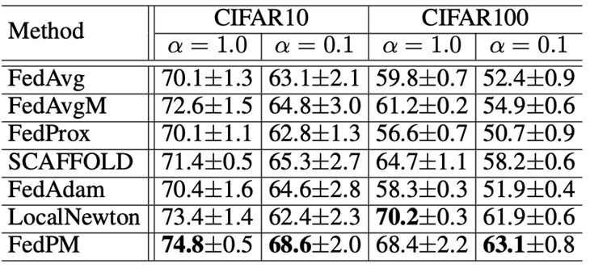
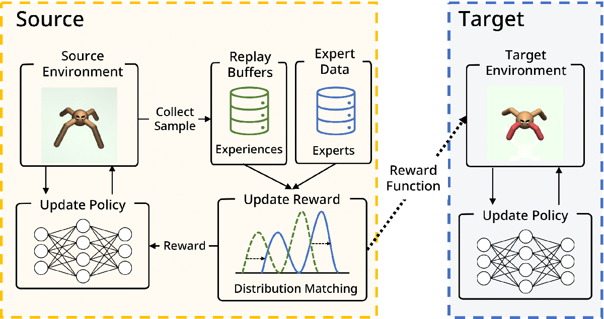
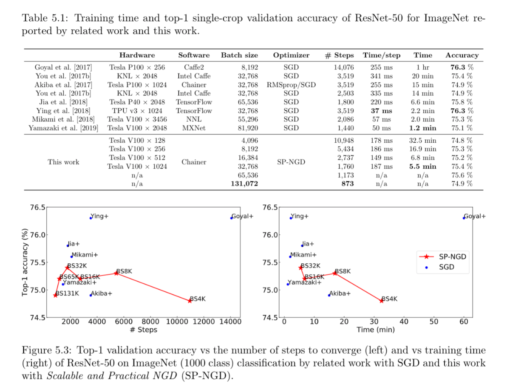
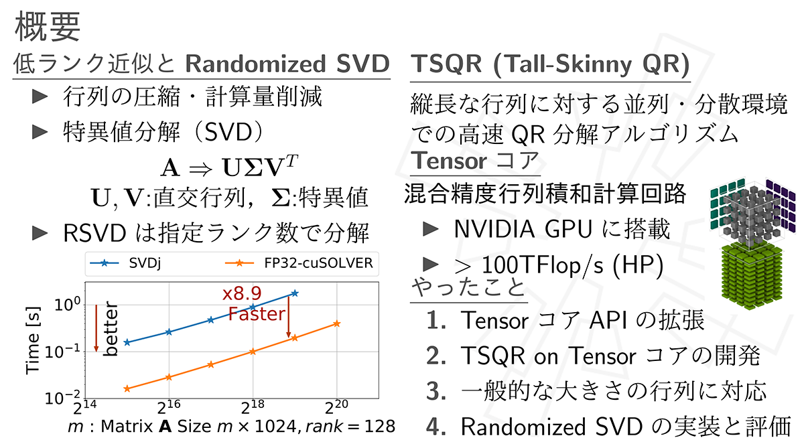
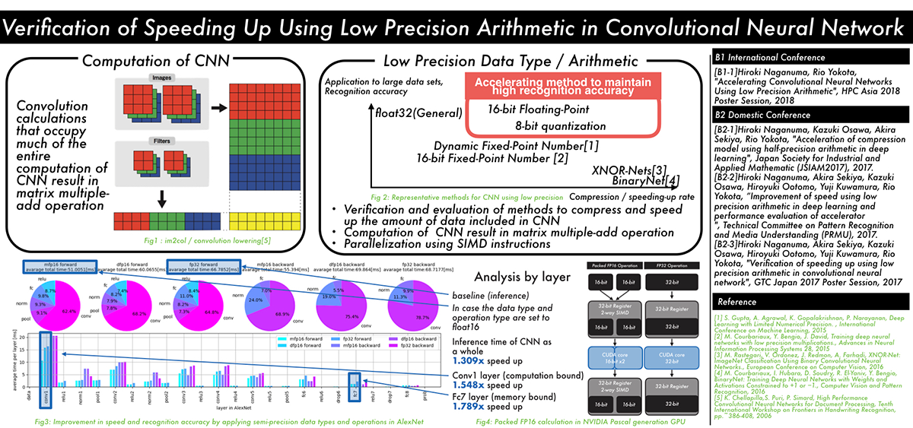
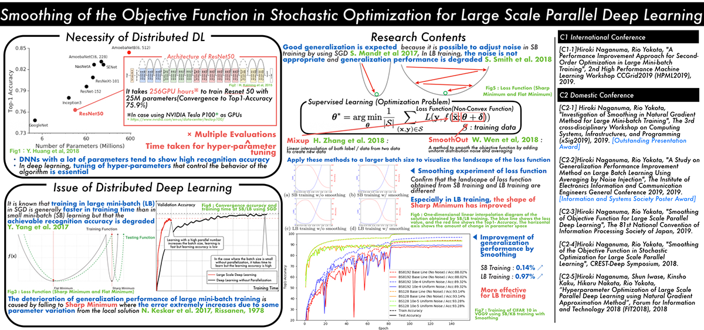

2025年度 主な研究テーマ
大規模言語モデル(LLM)の事前学習
横田研では、岡崎研と産総研と共同で大規模言語モデルSwallowを開発しています。一から事前学習すると膨大な計算資源が必要になるので、英語メインで学習されたQwen3やgpt-ossなどのオープンなモデルから日本語メインの継続学習を行う方針を採用しています。モデルのパラメータはHuggingFace上で公開されていますのでApache2.0ライセンスに従う限り、研究や商業目的などで利用できます。NIIのLLM研究開発センターで開発しているLLM-jpモデルは、これとは対照的に一から日本語と英語で事前学習を行っています。また、モデルのパラメータだけでなく、学習に用いたデータや失敗したケースなども公開する方針です。今年度はLLM-jpでもQwen3に近い構造のMoEモデルをベースとし数学やコードのデータを充実させて論理推論能力の向上を目指しています。
{kind=link}
MoEの論理推論能力の向上
経験的スケーリング法則は大規模言語モデル（LLM）の進化を牽引してきたが、モデルアーキテクチャやデータパイプラインが変更されるたびにその係数は変動する。最先端システムで標準となった専門家混合モデル（MoE）は、現在の高密度モデル研究が見落としている新たな疎性次元を導入する。本研究では、MoEのスパーシティが二つの異なる能力領域―記憶能力と推論能力―にどのように影響するかを調査する。固定された計算リソース予算下で、総パラメータ数、アクティブパラメータ数、トップkルーティングを変化させたMoEファミリーを訓練し、事前学習損失と下流タスク精度を分離して分析した。結果から二つの原則が明らかになった。第一に「有効FLOPs」：同一の学習損失でも有効計算量が多いモデルほど推論精度が高い。第二に「パラメータ当たり総トークン数（TPP）」：記憶課題はパラメータ数増加で改善するが、推論課題は最適TPPで効果を発揮し、推論がデータ集約的であることを示唆する。強化学習によるポストトレーニング（GRPO）も、テスト時計算量の増加も、これらの傾向を変えない。したがって我々は、最適MoEスパース性はアクティブFLOPsとTPPによって共同決定されなければならないと主張し、計算量最適スケーリングの古典的観念を修正する。モデルチェックポイント、コード、ログはhttps://github.com/rioyokotalab/optimal-sparsityでオープンソース化されている。

▲クリックすると拡大されます
連合学習への二次最適化の適用
二次最適化を活用した新たな連合学習手法である連合事前条件付き混合（FedPM）を提案する。従来の方法（LocalNewton、LTDA、FedSophiaなど）は、クライアント側で反復的な局所更新を行い、サーバー側で局所パラメータを単純に混合することで、FLに二階微分法を組み込んできた。しかし、これらの手法ではローカル事前条件付け器のドリフトが頻繁に発生し、特に異種データ環境においてパラメータ学習の収束を著しく阻害する。この問題を克服するため、我々は理想的な二次更新（グローバル事前条件付けされたグローバル勾配を用いて計算）を、サーバー側でのパラメータ混合とクライアント側でのローカルパラメータ更新に分解することで更新規則を改良する。その結果、我々のFedPMはサーバー側で事前条件付きローカルパラメータ混合を導入し、ローカル事前条件付け器のドリフトを効果的に軽減する。単一ローカル更新を含むシナリオにおいて、強く凸な目的関数に対する超線形収束率を示す理論的収束解析を提供する。FedPMの実用的な利点を実証するため、広範な実験を実施した。その結果、単純混合を組み込んだ従来手法と比較して、FedPMではテスト精度が大幅に改善され、二階最適化の潜在能力を完全に活用していることが示された。

▲クリックすると拡大されます
{kind=link}
Masked Gated Linear Unit
ゲート線形ユニット（GLU）は、最先端の大規模言語モデル（LLM）のフィードフォワードネットワークにおいて不可欠な構成要素となっています。しかし、ゲートストリームと値ストリームに別々の重み行列を使用するため、ゲートのないフィードフォワード層と比較して2倍のメモリ読み取りが必要になります。このボトルネックを解決するため、効率的なカーネル実装を備えた新しいGLUファミリーであるマスクゲート線形ユニット（MGLU）を導入します。 MGLUの中核となる貢献には、(1)複数のバイナリマスクを学習する要素ごとのゲーティングの混合（MoEG）アーキテクチャ、各マスクが単一の共有重み行列上の要素レベルでゲートまたは値の割り当てを決定することでメモリ転送を削減するアーキテクチャ、(2)ハードウェアフレンドリーなカーネルであるFlashMGLUが含まれます。FlashMGLUは、単純なPyTorch MGLUと比較して推論時間が最大19.7倍高速化され、RTX5090 GPUでアーキテクチャが複雑になったにもかかわらず、標準的なGLUと比較してメモリ効率が47％高く、34％高速です。LLM実験では、Swish活性化バリアントSwiMGLUは、メモリの利点を維持しながら、SwiGLUベースラインのダウンストリーム精度に匹敵、あるいは上回っています。

▲クリックすると拡大されます
2024年度 学位論文研究 修士論文
人工画像データを用いた視覚-言語モデルの事前学習（井口悠司）
近年，ディープラーニング技術の高度化に伴い，画像とテキストを同時に扱う視覚-言語モデルが多様なタスクで顕著な成果を上げている．しかし，大規模な実画像データセットを用いる場合，著作権やプライバシー，倫理的な問題が常に懸念される．また，インターネット上から収集されるデータには不適切な内容やバイアスが含まれる場合があり，モデルの推論結果や公平性に悪影響を及ぼすリスクがある．そこで本研究では，3D シミュレーションを用いて作成した人工画像データと自動生成したキャプションを用い，視覚-言語モデルとして注目されるCLIP を学習させるアプローチを提案した．具体的には，Unity 上で動作するシミュレーションプラットフォーム(TDW) において，多様なシーンのオブジェクト配置やカメラ位置，オブジェクトのマテリアルなどを制御し，人工的に大量の画像を生成したうえで，その際のパラメータ情報をルールベースでテキスト化してキャプションを作成した．こうして得られた人工データセットを用いて，CLIP の事前学習を行った結果，モデルのファインチューニングや線形分類タスクでは一定の学習効果が確認されたものの，ゼロショット推論能力獲得には至らなかった．すなわち，現状の人工データセットのみで幅広い推論力を身につけることは難しいが，特定のタスクに対しては学習効果を発揮できた．さらに，本研究では，実データセットを用いた学習時に，キャプションの長さや画像中のオブジェクト数，背景の有無などを制御し，各要素がモデルの性能に与える影響を体系的に分析した．実験の結果，各ダウンストリームタスクにおけるモデル性能はタスクの特性やデータの設計次第で大きく変化することが判明した．特に，名詞だけのキャプションや単純化された背景など，データ作成コストを抑える方策が，必ずしも学習性能を大きく損なわない点は興味深い．本研究の成果は，視覚-言語モデルの学習におけるデータ設計に関する貴重な知見を与えるとともに，著作権・プライバシーの観点から問題を抱える実画像の代替あるいは補完策として，3D シミュレーションを用いて作成する人工データセットの有用性を示すものである．今後は，より多様なオブジェクトを導入したシミュレーションの設計や，人工データと少量の実データセットを統合した学習方策の考案などによって，高度なゼロショット性能と幅広いタスクへの適応力を兼ね備えた，安全な視覚-言語モデルの実現が期待される．

▲クリックすると拡大されます
On the Stable Parameterization of Second-Order Optimization and Local Loss Optimization Effective Towards the Infinite Width（Satoki Ishikawa）
Second-order optimization has been developed to accelerate the training of deep neural networks and it is being applied to increasingly larger-scale models. In this study, towards training on further larger scales, we identify a specific parameterization for second-order optimization that promotes feature learning in a stable manner even if the network width increases significantly. Inspired by a maximal update parameterization (µP), we consider a one-step update of the gradient and reveal the appropriate scales of hyperparameters including random initialization, learning rates, and damping terms. Our approach covers two major second-order optimization algorithms, K-FAC and Shampoo, and we demon- strate that our parameterization achieves higher generalization performance in feature learning. In particular, it enables us to transfer the hyperparameters across models with different widths.
Next, we explored local learning, which trains a network through layer-wise local tar- gets and losses, and has been studied as an alternative to backpropagation (BP) in neural computation. However, its algorithms often become more complex or require additional hyperparameters because of the locality, making it challenging to identify desirable set- tings in which the algorithm progresses in a stable manner. To provide theoretical and quantitative insights, we introduce the µP in the infinite-width limit for two representative designs of local targets: predictive coding (PC) and target propagation (TP). We verified that ?P enables hyperparameter transfer across models of different widths. Furthermore, our analysis revealed unique and intriguing properties of ?P that are not present in con- ventional BP. By analyzing deep linear networks, we found that PC's gradients interpolate between first-order and Gauss-Newton-like gradients, depending on the parameterization. We demonstrate that, in specific standard settings, PC in the infinite-width limit behaves more similarly to the first-order gradient. For TP, even with the standard scaling of the last layer, which differs from classical µP, its local loss optimization favors the feature learning regime over the kernel regime.

▲クリックすると拡大されます
Accelerating Symmetric Rank-k Updates Using Tensor Cores（Runchu Zhao）
The BLAS3 library, which includes matrix-matrix multiplications and rank-k updates for general, symmetric, and triangular dense matrices, plays a crucial role in optimizing com- putational complexity in linear algebra. By exploiting the inherent structure of matrices, BLAS3 operations can significantly reduce the number of arithmetic operations required, making them essential for high-performance computing tasks in various fields such as sci- entific computing and machine learning. However, the rapid development of modern GPU architectures, such as those featuring Tensor Cores, introduces new challenges for exist- ing algorithms. These hardware units are optimized for fast low-precision General Matrix Multiply (GEMM) operations, but conventional algorithms often perform suboptimally on such hardware. This is particularly evident in the case of high-precision GEMMs, where mixed-precision accelerators like Tensor Cores can theoretically offer better performance but fail to fully leverage their potential with current BLAS libraries. To address these limitations, we propose a novel set of recursion-based BLAS3 algorithms that not only exploit the symmetric and triangular properties of matrices but also optimize data local- ity, enhance arithmetic intensity, and improve parallelism. These algorithms are designed to take full advantage of modern hardware features, specifically the high throughput of Tensor Cores, while minimizing computational overhead. Our approach contrasts with traditional recursive algorithms by using an iterative recursion-based strategy that priori- tizes data locality and increased arithmetic intensity-two crucial factors that contribute to performance gains in modern architectures. We experimentally evaluate the perfor- mance of our proposed TensorBLAS library, comparing it to Nvidia's cuBLAS library across a range of precision modes. On the A100 GPU, TensorBLAS achieves a speedup of up to 2.48x and 2.36x in FP16 and FP32 precision, respectively. On the RTX 4090 GPU, we observe an impressive speedup of up to 5.72x in FP64 precision. Furthermore, by lever- aging FP64 Tensor Cores, TensorBLAS outperforms cuBLAS with a nearly 1.5x speedup, demonstrating the superior efficiency of our methods. These results not only highlight the potential for significant performance improvements in linear algebra computations on modern GPUs, but they also pave the way for future advancements in high-performance computing, particularly in the areas of machine learning and large-scale scientific simula- tions. Our approach offers a promising solution to fully exploit the computational power of emerging hardware architectures, facilitating more efficient and scalable solutions for high-precision operations.

▲クリックすると拡大されます
2024年度 学位論文研究 学士論文
語順変更に対応したCLIP モデルの学習（川村政貴）
CLIP（Contrastive Language-Image Pretraining）は、画像とテキスト間のマルチモーダル学習において高い性能を示しており、VLM (Vision Language Model) の基盤としても利用されている。しかし、言語表現の柔軟性や構成的推論能力に課題があることがこれまで多くの研究で指摘されてきた。これらの課題は、CLIP の応用範囲を広げる上で克服すべき最も重要な問題の一つであり、実際に検索システムや画像生成、視覚質問応答（VQA）などの応用シナリオにおいて大きな影響を及ぼしている。このため、CLIP の言語理解能力を向上させる研究は現在も盛んに進められている。本研究では特に、CLIP がキャプション内の語順変更に対して過剰に敏感である、という新たな課題に焦点を当てた。具体的には、語順は異なるが意味が同一であるキャプションに対し、CLIP が異なる認識結果を出力するという問題である。この問題は、言語的柔軟性や構成的推論能力の欠如に起因しており、CLIP の応用範囲において特定の課題を引き起こす。例えば検索システムでは、ユーザーが異なる語順や言い回しで同じ意味を持つクエリを入力した場合、CLIP がそれらを正しく理解できず、期待された検索結果を一貫して提供できない可能性がある。本研究では、この未解決の課題を体系的に明らかにし、この課題に対する解決策として、学習データにおけるキャプションの多様性を拡張する新しい手法を提案した。具体的には、キャプションの意味を保ちながら語順を入れ替える操作や言い換えを導入し、CLIP モデルを学習することで、語順変更に対するロバスト性を向上させるアプローチを実現した。成果として、CLIP における構成的推論能力の課題に新たな視点を提供するとともに、言語表現の柔軟性を向上させるための具体的な指針を示し、CLIP の応用可能性を広げマルチモーダル学習の分野の更なる発展に寄与した。

▲クリックすると拡大されます
Building an Audio-Language Model Based on Large Language Models（Yukito Tajima）
Recent advancements in large language models (LLMs) have demonstrated exceptional capabilities in tackling complex linguistic tasks. However, their application to audio-language modeling remains an area of ongoing exploration. This thesis investigates the development of a Japanese audio-language model, leveraging open-source Japanese and English datasets. The study systematically examines the impact of various training strategies, including freezing components such as the encoder and decoder, to optimize performance in Japanese Character Error Rate (CER) and English Word Error Rate (WER) for automatic speech recognition tasks. The proposed audio-language model is built upon Whisper large v3 as the encoder and Llama 3.2 Swallow 1B as the language decoder. Experimental results reveal that training the decoder while freezing the encoder is the most effective strategy. This approach capitalizes on the robust pre-trained representations of the encoder while enabling the decoder to adapt to task-specific requirements. Notably, the model achieves a CER of 7.25 on JSUT and 5.94 on Common Voice v8.0, matching or surpassing the accuracy of Whisper. Moreover, this configuration delivers competitive performance across Japanese and English tasks, rivaling audio-language models with significantly larger decoders, including those with 100 billion parameters. Looking forward, addressing dataset quality issues is essential for further advancements. Integrating language model pre-training with audio data and scalirng the architecture to larger models, such as 8B or beyond, hold promise for improved generalization and performance. Future evaluations targeting domain-specific terminologies and specialized applications will provide deeper insights into the model’s real-world applicability. These efforts are expected to drive the development of robust and versatile audio-language models, advancing multilingual automatic speech recognition systems.

▲クリックすると拡大されます
2023年度 学位論文研究 修士論文
Development of Computationally Efficient Second-Order Optimizer for Large Language Models (Cong Bai)
In recent years, Large Language Models (LLMs) have garnered significant attention in the field of artificial intelligence due to their profound capabilities in understanding and generating natural language. However, the resource-intensive nature of training these huge models has led to monopolization by the tech giants, presenting a considerable bar- rier to progress within the field. Second-order optimizers, which leverage second-order information matrices such as Hessians, Fisher Information Matrices (FIMs) and gradient second moment matrices, hold promise for reducing the resources required for training by accelerating convergence. Yet, at the scale of deep learning, these second-order informa- tion matrices become impractically large. Although popular second-order optimizers like K-FAC and Shampoo have approximated these matrices, they still incur substantial over- head in language model training practice, forcing a compromise between tolerating this overhead and making further crude approximations, thereby hindering further research and application of them. This study aims at addressing this challenge and developing efficient second-order optimizers for training large language models.

▲クリックすると拡大されます
自然勾配主双対法を用いた分散連合学習 (石井 央)
連合学習では、データをそのデバイスやサーバーから集めることなく一つの機械学習を行うことができるため、機密性の高いデータでも学習を行うことができる。多くの場面では中 央集権型の連合学習が用いられるが、中央サーバーがないことによる単一障害点やボトルネックからの脱却という利点により、分散連合学習も近年注目を集めている。しかし、分散連合学習で用いられる最適化手法は主に損失勾配のみを用いる一次最適化手法であり、学習の収束までに多くの通信が必要となるという問題点がある。本研究では、深層ニューラルネットワーク(DNN)の分散連合学習における新しい最適化手法である自然勾配主双対法(Natural Gradient Primal Dual method, NGPD)を提唱する。

▲クリックすると拡大されます
人工画像を用いた Vision Transformer の事前学習 (中村 祥大)
深層Visionモデルに対する事前学習データセットの大規模化が進むにつれ、著作権・プライバシー・倫理などの面において問題のある画像のデータセットへの混入を防ぐことが困難になっている。実際、2023年12月にはLAION.aiが、大規模画像-テキストデータセットであるLAION5Bの公開を、データセット内に不適切な画像が混入しているとして停止する事態が発生した。このような問題を根本から回避するアプローチとして、数式などを元に生成される実画像を用いない人工画像データセット事前学習の一部に用いるという手法がある。 人工画像はその事前学習データセットとしての質を、生成方法を変更することにより継続的に改善することができるが、そのような改善を行う既存の取り組みでは多くの人間の知識に基づいた試行錯誤が必要であり、多大な労力を伴う。 本研究では，「事前学習データセットの質」を予測する指標を設計・利用し、事前学習に効果的な人工画像データセットを自動構築することを試みた。

▲クリックすると拡大されます
富岳上の大規模並列における Allreduce の高速化 (中村 秋海)
大規模深層学習モデルの学習では，データ並列学習によって高速化を行ったり、モデル並列学習によってモデルを分割したりするような並列学習手法を用いる。スーパーコンピュータ「富岳」上で深層学習モデルの訓練を行う場合、1 ノード当たりの性能では 他のGPUマシンに比べて劣るが、「富岳」の大規模なノード構成を利用し、大規模並列による訓練を行うことで速度向上を達成する方法がとられる。しかし、大規模並列による深層学習では、学習時間に占める通信時間の割合が増え、学習の速度向上の効率がよくないという欠点が存在する。本研究では、「富岳」上でAllReduceを高速化することを目的としている。深層学習モデルへの応用を考慮し、「富岳」の6次元トーラス直接網を3種類の並列手法で直交するように次元を3つ に分割し、それらの分割されたそれぞれで利用可能なAllReduceアルゴリズムを開発した。

▲クリックすると拡大されます
Acceleration of Diffusion Models Training and Sampling Through the Use of Multiple Models (Zhaoqing Wang)
In recent years, Diffusion Probabilistic Models (Diffusion Models or DPMs) have sparked a surge in generative models for images. However, diffusion models still face challenges in terms of training and sampling efficiency. While various efforts have been made to accelerate sampling or enhance training strategies, these improvements are constrained by the limitations of the single-model backbone used in diffusion models. After a thorough examination of the theoretical foundations and existing analyses, we propose two approaches to enhance the efficiency of training and sampling in diffusion models. Firstly, we advocate separating a denoising model and a score model from the diffusion model backbone, training them with specific targets using only one inference. Secondly, we suggest unfolding the single-model backbone into multiple individual models and training them in a distributed manner.
{kind=link}
2023年度 学位論文研究 学士論文
大規模言語モデルの分散並列学習 (藤井 一喜)
近年、様々な研究機関や企業で大規模言語モデル (LLM) の開発が行われている。これらのモデルは、人間に近い言語理解能力と生成能力、様々な分野への適用可能性を示し、大きな注目を集めている。大規模言語モデルの効率的な学習には、分散並列学習が不可欠であり、学習効率に大きく影響する重要な要素である。しかしながら、論文やTechnical Report にはモデルの性能や、学習コーパス、モデルアーキテクチャに関する記述が主であることが多く、分散並列学習手法に関するノウハウは十分には共有されていない。また、最適な分散並列学習手法は、モデルサイズ、モデルアーキテクチャ、学習環境に大きく依存し、ある論文における設定がすべての場合において最適であることは稀である。本研究では、2.8B、7B、13B、70B、175B の複数のモデルサイズについてLLMの学習を行った。 また、スクラッチからの事前学習と学習済みのモデルからの継続事前学習の両方を行った。さらに、 Transformer アーキテクチャではない状態空間モデル (State Space Model) の学習も行った。

▲クリックすると拡大されます
継続学習を用いたマルチリンガル・マルチエキスパートモデルの開発 (中村 泰士)
LLM は、タスクごとに特化したファインチューニングを行うことなく、大量のコーパスを事前学習をすることで、0-shot もしくは few-shot で自然言語処理の多くのタスクを解くことができる。非英語圏でも、自国の言語に対応する LLM の開発を進めることが増えている。効率的に複数の言語および複数のタスクに対応するモデルの開発は依然として課題が多く残されている。非英語話者 にとって、母国語でのプログラミング学習は重要な要求であるにもかかわらず、そのような言語でのコード生成をサポートするモデルはまれである。本研究では、主に英語とコードで学習されたモデル である、starcoderplusを基に日本語、英語、フィンランド語、ベトナム語、ヒンディー語、コードを用いて継続事前学習を行い、多言語に強いモデルを開発した。

▲クリックすると拡大されます
大規模言語モデルの構造探索（岡本 拓巳）
BERT は、2018 年に登場したモデルで、当時、11 個の NLP タスクにおいて、SOTA を達成したモデルである。しかし、BERTでは高い性能を達成するために大きなモデルサイズや大量の事前学習データセットを用いた事前学習が行われているため、学習に多大な時間を要する。この問題を解決するために、モデルに用いられているパラメータ数や各パラメータを表現する bit 数を削減することで性能を維持、または向上させつつモデルサイズを削減するモデル圧縮という手法の研究が行われている。モデル圧縮において提案されている手法には、枝刈り、量子化、蒸留、低ランク行列近似、Neural Architecture Search(NAS) がある。これらの手法のうち、NAS は視覚タスクのモデルに対しては色々な探索手法や探索空間が提案されているが、BERT や GPT に対する提案は少ない。そこで、本研究では、NAS を用いて BERT における最適な構造を探索して、モデルサイズを削減する実験を行った。

▲クリックすると拡大されます
2022年度 学位論文研究 修士論文
人工画像による事前学習のスケールアップとその効果 (高島 空良)
画像認識タスクの文脈では、JFT-300M/3B のような超大規模な実画像データセットで事前 学習した ViT によって最高精度が更新されている。一方で、事前学習に用いられるラベル付き 実画像データセットは、倫理的・権利的問題や、収集・ラベリングの困難、一部組織による寡 占など、多くの問題を抱えており、データセット大規模化によってこれらの問題を制御することは難しくなっている。そこで本研究では、ViT を事前学習させる FDSL 用人工画像データセットについて、1) 画像 内オブジェクトの輪郭が重要、2) 画像表現のバリエーションが重要、3) スケールアップにより 事前学習効果の向上が可能、という 3 つの仮説を立て、それぞれの仮説を検証できる FDSL 用 データセット{ExFractalDB, RCDB, VisualAtom}を新規に構築し、各データセットがもたらす事前学習効果の比較検証を実施すると共に、FDSL 手法の事前学習効果の底上げを図った。
{kind=link}
Model Reduction Effect of NAS during Finetuning of Vision Transformers (Xinyu Zhang)
Vision Transformers (ViT), an application of Transformer used in natural language processing, have surpassed traditional Convolutional Neural Networks (CNN) in image classification on ImageNet by pre-training on large datasets. However, the models are becoming so large to achieve high accuracy that they cannot even fit on a single GPU, which limits their usefulness during inference. In order to reduce the size of such large ViT models while keeping their performance, we utilize Neural Architecture Search (NAS), which makes it possible to automatically design architectures of deep neural networks. We propose a method called Auto-MetaFormer, which can automatically search for architecture of MetaFormer based on algorithm of DARTS by Liu et al. It uses a gradient based approach to search for architecture by training architecture weights along with model weights. Auto-MetaFormer succeeds in automatically searching the MetaFormer architecture, gaining a 2% increase in accuracy using the same number of parameters. For the same classification accuracy, the number of parameters also be further reduced by 20% compared to the manually designed architecture.

▲クリックすると拡大されます
Neural Network Pruning based on Second-Order Information (Sixue Wang)
Nowadays, deep learning has demonstrated its ability to solve arduous tasks in different domains, such as computer vision, voice interaction, and natural language processing, but there is a huge gap between academia and industry when considering cost, efficiency and quality. Neural network pruning is a common technique to reduce the size of neural networks. It selects some redundant parameters and removes them all. The goal of this thesis is to exploit second-order information in neural network pruning in a practical manner. We demonstrate that second-order neural network pruning can achieve better or comparable results within similar computational resources.

▲クリックすると拡大されます
走行動画の大規模自己教師あり学習 (高橋 那弥)
自動運転において、カメラやライダーから得られた外界の環境の認識は安全を担保するための技術の 中核をなす。これらの認識精度は深層学習の登場により飛躍的に向上したが、完全自動運転を実現する ためにはまだ十分であるとは言えない。その原因の一つとして、自動車の走行データは膨大な数が収集可能である一方で、真値ラベルのアノテーションコストは高く、学習に要する教師データを十分に用意するのは難しいという課題がある。本研究では、画像ピクセル単位での自己教師あり学習を用いた走行動画の事前学習を行い、かつオプ ティカルフローを用いて物体の見えの時間変化に頑健な認識モデルを構築することを目指す。その事前学習効果の評価を行う下流タスクとしては CityScapes を用いたセマンティックセグメンテーションで の評価を行う。その結果、画像ピクセル単位で比較する際の近傍の定義によって、精度が大きく変化することがわかった。また、本来は正例ではないピクセルペアが正例と判定される擬正例をマスクによって除去することで、精度がさらに改善されることがわかった。

▲クリックすると拡大されます
深層学習を用いた Visual SLAM による 変化検出 (大川 快)
自動運転や AR/MR、ロボティクスにおいて「目」の役割 を果たすのは、連続する画像列等の情報 からカメラの自己位置推定や周辺の 3 次元マップを復元する Visual SLAM であり、AI 社会における 最重要基盤技術の 1 つとなっている。近年、Visual SLAM の研究において自己位置と3次元マップを ロバストにリアルタイムで推定可能な手法が登場している。また近年進化が目覚ましい深層学習を取り入れた手法も提案されており、より高精度な自己位置推定と3次元マップの復元が可能となってき ている。しかし、3次元マップの作成から一定時間が経過すると実際のシーンが変化し、3次元マップとの間に齟齬が生まれる可能性がある。このような齟齬は Visual SLAM の精度を低下させ、古い情報の蓄積による 3 次元マップの肥大化を引き起こす。本研究では DROID-SLAM から得られる情報を用いて2時刻の 3 次元マップに対 して変化検出を行う手法を提案する。DROID-SLAM で推定された密な深度情報と回帰型ニューラル ネットワークで推定される Optical Flow を用いて変化マスクを推定する。また、新たに変化を考慮した目的関数を導入し、変化マスクの最適化を行った。さらに、本研究に適した合成画像データセットを 作成し、実験を行った。実験により、DROID-SLAM で推定された2時刻の 3 次元マップに対して変化 マスクの推定を行うことが可能であることを確認した。

▲クリックすると拡大されます
2022年度 学位論文研究 学士論文
深層学習の二次最適化における勾配の前処理に関する考察 (石川 智貴)
曲率行列 (ヘッセ行列, フィッシャー情報行列,2 次モーメント)による勾配の前処理は深層学習の幅広いタスクにおいて重要な技術となっている。深層学習の最適化を高速化する二次最適化を始め、継続学習、枝刈り、ベイズ推論など様々な領域において勾配の前処理が使われている。深層学習の二次最適化では曲率行列を近似した上で勾配の前処理を行う。その際の近似アルゴリズムとして 様々な種類のものが提案されているが、その特性の違いについてはほとんど調べられていない。そこで、本研究ではメモリ消費量や計算量などの計算的側面と学習の収束性の 2 つの観点からこれらのアルゴリズムを比較する。全体の学習時間は 1step あたりの計算時間と収束にかかるステップ数の積に よって決まるため、この2つの特性の両方を調べることがとても重要である。その結果、KFAC や Shampoo などの多くの二次最適化手法においては、ラージバッチサイズでの学習でとりわけ活躍す る可能性があることがわかった。また、SENG や SMW-NG などの逆行列計算に SMW 公式を利用する二次最適化手法は他の手法とは異なる性質を持つことが分かった。

▲クリックすると拡大されます
Newton Fractal を用いた Vision Transformer の事前学習 (近江 俊樹)
画像認識分野では、JFT-300M/3B などの大規模自然画像データセットを用いて事前学習を行った後に、目的のタスクのデータでファインチューニングする手法が主流になっている。事前学習に用 いるデータセットが大規模であるほど高い画像分類性能や物体認識性能が得られることが知られており、どのデータセットを事前学習に用いるかは重要な問題になっている。しかしながら、自然画像 データセットは、大量の画像の収集、ラベリングコスト、著作権の問題、内容の偏りの問題、公平性 や不快なラベルの問題など、多くの問題を抱えている。本研究では、ニュートン法により生成されるニュートンフラクタル画像で構成された画像データ セットを用いて Vision Transformer の Tiny モデルの事前学習を行い、CIFAR-10/100 のファイン チューニングタスクの精度によるデータセットの性能の評価を行った。さらに、従来手法のデータ セットである FractalDB、ExFractalDB と自然画像データセットの ImageNet でも同様の実験を行 うことで、従来手法との比較をした。結果として、ニュートンフラクタル画像のデータセットによる 事前学習効果が確認され、従来の FDSL データセットと同様に、カラー画像やグレースケール画像 よりも白黒画像により構成されたデータセットの性能が高く、画像の生成条件を変えることで性能が 向上することが分かった。ImageNet よりも事前学習効果は低い結果となったが、従来の FDSL 手法で用いられる画像表現に比べて高い事前学習効果が確認された。

▲クリックすると拡大されます
量子渦計算の高速多重極展開法を用いた高速化 (齋藤 智和)
極低温の流体は量子的な効果により粘性が 0 になる。そのような流体は超流体と呼ばれる。超流体の物理的な性質は工学的に重要であるが、応用のためには超流体の乱流化などの複雑な現象を解明する必要がある。しかし、超流体を実験する場合、流体を極低温に維持する必要があるため高額な設備が必要となる。そこで、シミュレーションによる解明が重要になるが、乱流のシミュレーションを行う場合、有限要素法などの格子を必要とする方法は格子を非常に細かくする必要があり、膨大な時間 がかかる。そこで、量子乱流は多数の渦糸からなる非粘性流体であり渦糸近似法を利用するのが有効である。本研究では、Biot-Savart の法則に基づく渦粒子間の相互作用を計算する FMM を CPU 上及び GPU 上で実装し、その計算速度と精度について評価を行った。FMM は近似アルゴリズムでありその精度は多重極展開の次数 P に依存するが、実装においても P の増加 とともに誤差が減少することを確認できた。さらに、FMM では周期境界条件を高速に計算可能であるが、粒子数が 104 個、FMM の次数が P = 10 の場合に周期鏡像が 274 個の付近で誤差が一定の値 に収束することが確認できた。

▲クリックすると拡大されます
2021年度 学位論文研究 修士論文
確率的重み平均化法のラージバッチ問題及び分布外汎化への拡張 (所畑 貴大)
深層ニューラルネットワークモデルの実社会への適用への課題は，学習時間の増加や分布外のデータに対する汎化能力の低下など数多く存在する。学習時間の増加問題は，学習の高速化手法として複数の計算機を並列に用いて学習を行う分散並列深層学習が存在するが，汎化性能が低下する問題が経験的に知られている。本研究は，Stochastic Weight Averaging（SWA）に注目し，分散並列深層学習における汎化性能の低下問題と分布外のデータに対する汎化の改善を目的とする。SWAは，学習中に異なる局所解に収束した複数のモデルを得て平均化することで，一種のアンサンブル学習の近似を行う学習手法である。本研究ではSWAのハイパーパラメータへの依存性を網羅的に調査した。そして，SWAをを分散並列深層学習に適用し汎化性能を改善できることを示した。更に，分布外のデータに対する汎化タスクにおけるSWAの有効性を検証し，改善手法の提案を行なった。
{kind=link}
Off-Policy Inverse Reinforcement Learning via Distribution Matching (星野 華)
Inverse Reinforcement Learning (IRL) is attractive in scenarios where reward engineering can be tedious. However, prior IRL algorithms use on-policy transitions, which require intensive sampling from the current policy for stable and optimal performance. This limits IRL applications in the real world, where environment interactions can become highly expensive. To tackle this problem, we present Off-Policy Inverse Reinforcement Learning (OPIRL), which (1) adopts off-policy data distribution instead of on-policy and enables significant reduction of the number of interactions with the environment, (2) learns a reward function that is transferable with high generalization capabilities on changing dynamics, and (3) leverages mode-covering behavior for faster convergence. We demonstrate that our method is considerably more sample efficient and generalizes to novel environments through the experiments. Our method achieves better or comparable results on policy performance baselines with significantly fewer interactions. Furthermore, we empirically show that the recovered reward function generalizes to different tasks where prior arts are prone to fail.

▲クリックすると拡大されます
{kind=link}
Informative Sample-Aware Proxy for Deep Metric Learning (Aoyu Li)
Metric Learning is one if the core fundamental tasks of machine learning. In deep metric learning (DML), the proxy-based methods are drawing more and more attention recently because of their flexibility and efficiency while maintaining higher performance. In this work, we propose a novel proxy-based method combined with class-dependent dynamic weighting, called Informative Sample-Aware Proxy (Proxy-ISA).
Proxies, which are class-representative points in the representation space, receive updates based on proxy-sample similarities as sample representations do. In existing methods, it may be possible that a relatively small number of samples producing large gradient magnitudes (i.e., hard samples) and a relatively large number of samples producing small gradient magnitudes (i.e., easy samples) play a major part in the update. Based on the assumption that acquiring too much sensitivities to such extreme sets of samples would deteriorate the generalization ability, the proposed Proxy-ISA directly modifies a gradient weighting factor to each sample. In this work, we first design a method to estimate the learned class-related region to acquire the information of class hardness. By defining the hard and easy samples adaptively to the class hardness, each proxy identifies its own hard and easy samples and reduces their weighting factors with a scheduled threshold function, so that the model acquires more sensitivity to the intermediate samples, which is called "informative" samples. Furthermore, we incorporate the idea of active learning to emphasize the informative samples dynamically according to the learning step, and the dynamic weights are assigned separately for positive pairs and negative pairs. Extensive experiments on the CUB-200-2011, Cars-196, Stanford Online Products and In-shop Clothes Retrieval datasets demonstrate superiority of Proxy-ISA over the state-of-the-art methods.

▲クリックすると拡大されます
2021年度 学位論文研究 学士論文
深層学習における情報行列の固有値の高速解法 (石井 央)
深層学習においてフィッシャー情報行列とヘッセ行列は，損失関数の形状の把握やニューラルネットワークモデルの汎化性能の評価，最適化手法への適用といった場面で重要な役割を果たす．ただ，大規模なモデルではこれらの行列を計算することは困難であるため，固有値による評価が行われる．本研究では，データセットやネットワークのアーキテクチャを変えながら，正確なフィッシャー情報行列や高速近似計算で求めたフィッシャー情報行列の固有値密度をStochastic Lanczos Quadrature（SLQ）という手法を用いて近似計算し，正確な固有値から求めた固有値密度と比較した．また，SLQにおける反復回数を変えながら近似精度の関係を調べた．結果として，どのデータセットやアーキテクチャ，行列の近似手法においても，反復回数が5回あればSLQにより求まる固有値の範囲は実際の固有値の範囲とほぼ等しくなり，10回あればSLQにより求めた固有値密度の形は，正確な固有値から求めた固有値密度の形を反映していることが分かった．

▲クリックすると拡大されます
Vision Transformerにおけるバッチサイズの汎化性能への影響 (中村 秋海)
深層ニューラルネットワークを用いた深層学習は画像分類の様々なベンチマークにおいて，最も良い性能を達成している．画像分類において，事前学習で用いるデータセットは大規模なほどファインチューニング時の性能が良くなるため，膨大な学習時間が必要となる．深層学習は，ミニバッチを用いて勾配を計算し，最適化アルゴリズムを用いて損失関数を段階的に減少させる方法が存在する．バッチサイズを大きくすることで，同期データ並列学習を用いると，バッチサイズが大きいほどプロセス数を上昇させられ，プロセス数が大きいほど処理速度が上昇させられる点である．しかし，バッチサイズを大きくし過ぎると，汎化性能が低下するラージバッチ問題が生じ汎化性能が低下する．バッチサイズの汎化性能への影響の調査し，得られる汎化性能と計算速度を事前に把握することは，効率的なデータ並列学習を行うために必要不可欠である．画像分類における既存の研究では畳み込みに基づくニューラルネットワークにおけるバッチサイズの汎化性能への影響は調べられているが，注意機構に基づくVision Transformerは調べられていない．本論文では，Vision Transformer(ViT)におけるファインチューニング時のバッチサイズと汎化性能への影響を調査した．

▲クリックすると拡大されます
On the generalization gap of SAM optimizers for very large batch sizes (Elvin Munoz)
The generalization properties of a trained network are highly tied to the geometrical shape of the loss function evaluated at the parameters of the model; it has been found that flat minima increase the generalization properties of a neural network. Due to the stochasticity of most optimizers such as SGD, normally a flat minima will be found rather than a sharp minima. However, as we increase the batch size and thus reduce the stochasticity of the training process, it becomes more likely to fall into a sharp minima. There have been many methods that have been devised to counteract this effect and obtain high generalization properties even when using large batches, one of such methods is SAM (Sharpness-aware minimization). This method has been proven to improve the generalization properties of trained neural networks in the small-mid range of batch sizes and even it has been found to work in distributed training. However, a more in-detail study of its capabilities at higher batch sizes is needed; moreover this method introduces a new hyperparameter (neighborhood size) that needs to be tuned. The main goal of this work was to shed some light at the behavior of this optimizer when using a large batch (reaching almost full batch) and a study of the behavior of the neighborhood size for proper tuning.

▲クリックすると拡大されます
2020年度 学位論文研究 博士論文
Second-order Optimization for Large-scale Deep Learning（大沢 和樹）
Large-scale distributed training of deep neural networks results in models with worse generalization performance as a result of the increase in the effective mini-batch size. Previous approaches attempt to address this problem by varying the learning rate and batch size over epochs and layers, or ad hoc modifications of Batch Normalization. We propose Scalable and Practical Natural Gradient Descent , a principled approach for training models that allows them to attain similar generalization performance to models trained with first-order optimization methods, but with accelerated convergence. Furthermore, SP-NGD scales to large mini-batch sizes with a negligible computational overhead as compared to first-order methods. We evaluate SP-NGD on a benchmark task where highly optimized first-order methods are available as references: training a ResNet-50 model for image classification on the ImageNet dataset. We demonstrate convergence to a top-1 validation accuracy of 75.4% in 5.5 minutes using a mini-batch size of 32,768 with 1,024 GPUs, as well as an accuracy of 74.9% with an extremely large mini-batch size of 131,072 in 873 steps of SP-NGD.

▲クリックすると拡大されます
{kind=link}
2020年度 学位論文研究 修士論文
分散深層学習の省メモリ・省I/O化と二次最適化の高速化（上野 裕一郎）
本研究は巨大なDNNを膨大なデータセットで学習する際の種々の問題（学習時間，メモリ使用量，I/O）の解決を目指す． まず，少ない反復数での収束が期待される二次最適化に現れる行列計算の高速化手法を提案し，情報行列を計算しつつ一次最適化と同程度かより速い時間での収束を実現する． さらに，複数ノードとメモリ階層性を用いたメモリ分散手法を提案して，1GPUのメモリに格納できない巨大なDNNの1GPUでの学習と，そうではないDNNについても高速化を実現する． 加えて，ローカルディスクに格納できない膨大なデータセットをランダムに抽出する際にI/Oコストの低いデータ読み込み手法を提案する．
Yuichiro Ueno, Kazuki Osawa, Yohei Tsuji, Akira Naruse, Rio Yokota, Rich Information is Affordable: A Systematic Performance Analysis of Second-order Optimization Using K-FAC, Proceedings of the 26th ACM SIGKDD International Conference on Knowledge Discovery & Data Mining, Aug. 2020.

▲クリックすると拡大されます
自己教師あり学習による画像分類のための継続的な事前学習（中田 光）
深層学習では新しく得られたデータでモデルを学習した場合，過去に学習したデータに対する精度が大幅に劣化してしまうことが知られている．この問題は致命的忘却と呼ばれ，継続学習ではこの致命的忘却を防ぐことを目指す．継続学習に関する近年の研究では，多くの場合，常に教師ラベル付きのサンプルが十分に与えられる問題を対象としている．しかし，実問題ではしばしばラベル無しデータや少量のサンプルのみラベル付けされたデータから学習することが求められ，このようなラベルが不足する条件を対象とした継続学習に関する研究は十分に行われていない．そこで本研究では，ラベル付きサンプルが無い場合や不足する場合でも大規模に学習可能な，対照学習による自己教師あり学習に着目し，継続的に自己教師あり学習を行なった場合の検証を行なった．致命的忘却を防ぐため，本研究では蒸留および部分的な過去のデータの再学習を導入し，それらの効果をImageNetを用いて大規模な問題設定で調査した．

▲クリックすると拡大されます
一貫性損失を利用した Zero-shot 文字認識器 の性能向上（郭 林昇）
文字種の多い言語における手書き文字認識は、文字種の多さに起因するデータセット収集の難しさが課題となっている。Bengali.AI Handwritten Grapheme Classification Challengeでは、この課題に対して、Zero-shotな推論を可能とする文字認識モデルの作成を求められた。本研究では、推論ラベル文字情報から生成したフォント画像を認識する教師あり学習モデルと手書き画像をフォント画像に変換するモデルを作成し、これら、二つを結合することで、Zero-shotな推論を可能にした。提案した手法は、従来手法で用いられていた文字構造の細分化を行いマルチラベリング化してZero-shotな推論を行う手法と比較して、推論精度を60.1%から84.4%に引き上げた。また、本手法の実装にあたり、文字構造の知識は不要であり、検証を行ったベンガル語以外の言語への転用を可能としている。本手法と通常のクラス分類モデルなどを組み合わせた推論パイプラインはKaggleのResearch Code Competitionにおいて、1位の成績を獲得した。

▲クリックすると拡大されます
2020年度 学位論文研究 学士論文
大規模データセット・モデルを用いた深層学習における汎化性能向上手法の有効性について（伊藤 巧）
過学習は深層ニューラルネットワーク(DNN)の課題の一つであり、これを防ぐための正則化手法が提案されている。本研究では2020年にIshidaらによって提案された『Flooding』と呼ばれる、タスクに特化せず、多くの深層学習アルゴリズムに汎用的に導入可能な正則化手法に注目した。Floodingは既存の学習プログラムへの実装も非常に容易であることから今後より広い領域のタスクにおいて活用できることが期待されている。本研究ではIshidaらの実験にはなかった分散深層学習を用いた大規模な問題設定におけるFloodingの効果を検証した。具体的には大規模画像データセットImageNetの分類タスクにおける学習を行った。

▲クリックすると拡大されます
大規模な事前学習モデルにおけるラージバッチ問題の検証（Xinyu Zhang）
近年，大規模言語モデルの事前学習に多くの注目が集まっている．事前学習には膨大な計算時間を要するため，高速化が重要である．分散深層学習によるラージバッチ学習は，高速化を実現できるが，予測性能が劣化する問題（ラージバッチ問題）が知られている．本研究では，代表的な大規模言語モデルであるBERTの事前学習におけるラージバッチ問題の検証を行った．具体的には，事前学習中の損失の推移，及び言語理解タスクへのファインチューニング後の性能，の二点における変化を観察し評価を行った．

▲クリックすると拡大されます
平坦な解を目指すミニマックス最適化の分散深層学習への応用とその効果（高島 空良）
深層学習の汎化の原理解明を目指した最近の研究では，学習で求まった解近傍における損失関数の曲率（loss sharpness）が汎化に相関がある有力な指標として挙げられている．loss sharpnessを明示的に抑制しflat-minimaを目指す学習アルゴリズムとしてSharpness-Aware Minimization（SAM）が提案された．SAMでは，ミニバッチを複数プロセスに分割して各プロセスが独立にミニマックス最適化を行うことで学習精度が更に向上することが，特定のミニバッチサイズにおいて報告されている．本研究では，分割数やミニバッチサイズを網羅的に変えて畳み込みニューラルネットワークの学習を行い，SAMによる汎化性能向上の効果を検証した．

▲クリックすると拡大されます
2019年度 学位論文研究 修士論文
Tensorコアを用いたRandomized SVDの実装と評価 (大友 広幸)
本研究ではTensorコアを用いた高速かつ省メモリなRandomized SVDを開発しその評価を行った．
はじめにTensorコアを用いるためのAPIの構造の解析を行い，高速かつ省メモリにTensorコアを用いるためのAPI拡張の開発を行った． つぎにこれを用いてTensorコアを用いたTSQRの開発を行い，その計算精度と計算性能の調査を行った． 実装したTSQRでは入力行列の列数に制限があるため，これを複数回用いることで任意の大きさのQR分解を行うBlockQRを実装しRandomized SVDへの適用を行った． BlockQRではNVIDIAが開発している既存実装と比較し最大99.8%のメモリ消費を削減でき，4倍以上の計算速度の向上が確認された． Randomized SVDではNVIDIAが開発している既存手法での実装に対し精度の劣化を抑えつつ省メモリかつ高速に計算可能であることが確認された．

▲クリックすると拡大されます
{kind=link}
強化学習における好奇心駆動探索手法の高速なGPU 実装 (桑村 裕二)
強化学習は環境とエージェントの相互応答の繰り返しによって学習を行う機械学習の手法の一つだが、学習に膨大な時間がかかることが知られている。CuLEは代表的なプラットフォームであるAtari emulatorをGPU上で実行させることにより学習時間を大幅に削減させた。学習アルゴリズムにはV-trace Actor Criticが使われているが、Atariに対して高いスコアを実現させている統合型Q学習アルゴリズムRainbowとのスコアの統一的な比較は十分にされていない。そのため、本研究ではRainbow含め他の学習アルゴリズムとのスコア比較を行った。また、探索手法として高分散に適したコンパクトな設計であるRNDとの統合を行い、統合前後での学習スコアの差異を基に、探索手法の選定の必要性について考察を行った。
{kind=link}
Efficient library for hierarchical low rank approximation (Peter Spalthoff)
Dense matrices have a quadratic memory complexity and many operations on them have cubic scaling. This makes them prohibitively expensive for large scale operations. In many applications (covariance matrices, BEM...) a substructure of low rank blocks is found. This substructure can be exploited to create an efficient compression of the matrix, called hierarchical low rank approximation. On the resulting so-called Hierarchical Matrices, which only have linear storage complexity, all arithmetic operations (multiplication, inversion...) can be defined. These operations are also much faster with cloes to linear complexity. We are working on a modern, flexible library with distributed memory parallelization on heterogeneous nodes.

▲クリックすると拡大されます
2019年度学位論文研究 学士論文
確率的重み付け平均法のラージバッチ学習における有用性の検証 (所畑 貴大)
学習によるラージバッチ学習では、バッチサイズの増加と共に汎化性能が劣化する問題が経験的に知られている。本研究では、この問題を解決するために確率的重み付け平均法（Stochastic Weight Averaging ; SWA）に着目した。SWAは学習中にモデルのパラメータを定期的に抽出しそれらを平均化する手法であり、汎化性能の劣化の原因と考えられているSharpな解への収束を防ぐ効果が期待できる。本研究ではSWAをラージバッチ学習に適用することで汎化性能の改善効果を検証した。また、SWAを利用した並列深層学習手法であるSWAP（Stochastic Weight Averaging in Parallel）にも着目し、SWAPとラージバッチ学習における標準的な最適化手法の一つであるLARS(Layer-wise Adaptive Rate Scaling)を組み合わせた手法を提案及びその汎化性能の改善効果を検証した。

▲クリックすると拡大されます
情報行列を用いた深層ニューラルネットワークの汎化誤差推定 (星野 華)
近年，理論的観点，そして経験的観点から多くの汎化指標が提案されている．本研究では情報行列を用いた深層ニューラルネットワーク（DNN)の汎化指標，広く使える情報量基準（WAIC）に着目した．WAICは2010年に提案された汎化指標であるが，これの計算に必要なDNNにおける事後分布の推定が計算量とメモリ量の観点から困難なため，今まで大規模なDNNに用いた報告が未だなされていない．一方，近年急速に発展を遂げた情報行列の高速な近似手法と効率的な近似ベイズ推論手法を組み合わせることで，これらの問題を解決し，WAICを近似的に評価する方法を提案した．この近似的に推定されたWAICと，同じく情報行列を用いた汎化指標であるEmpirical TICをケンドールの順位相関係数で評価することで大規模な設定における有効性を検証した．

▲クリックすると拡大されます
2018年度学位論文研究 修士論文
畳み込みニューラルネットワークにおける低精度演算を用いた高速化の検証 (長沼 大樹)
Verification of speeding up using low precision arithmetic in convolutional neural network
The recent trend in convolutional neural networks (CNN) is to have deeper multilayered structures. While this improves the accuracy of the model, the amount of computation and the amount of data involved in learning and inference increases. In order to solve this problem, several techniques have been proposed to reduce the amount of data and the amount of computation by lowering the numerical precision of computation and data by utilizing the CNN's resistance to noise.
However, there is a lack of discussion on the relationship between parameter compression and speedup within each layer of the CNN.
In this research, we propose a method to speed up the inference by using half precision floating point SIMD instructions, by applying low precision to the learned model, in addition to reducing the data of the CNN model, and speeding up data access for layers that are computation-bound.
We examined the influence of CNN recognition accuracy, the speedup for each layer, and its reason, when we apply our method.

▲クリックすると拡大されます
{kind=link}
大規模並列深層学習のための確率的最適化に基づいた目的関数の平滑化 (長沼 大樹)
Smoothing of the Objective Function in Stochastic Optimization for Large Scale Parallel Deep Learning
Classical learning theory states that when the number of parameters of the model is too large compared to the data, the model will overfit and the generalization performance deteriorates. However, it has been empirically shown that deep neural networks (DNN) can achieve high generalization capability by training with extremely large amount of data and model parameters, which exceeds the predictions of classical learning theory. One drawback of this is that training of DNN requires enormous calculation time. Therefore, it is necessary to reduce the training time through large scale parallelization. Straightforward data-parallelization of DNN degrades convergence and generalization. In the present work, we investigate the possibility of using second order methods to solve this generalization gap in large-batch training. This is motivated by our observation that each mini-batch becomes more statistically stable, and thus the effect of considering the curvature plays a more important role in large-batch training. We have also found that naively adapting the natural gradient method causes the generalization performance to deteriorate further due to the lack of regularization capability. We propose an improved second order method by smoothing the loss function, which allows second order methods to generalize as well as mini-batch SGD.

▲クリックすると拡大されます
{kind=link}
2018年度学位論文研究 学士論文
帯域幅最適なGPU間AllReduce通信の階層化 (上野 裕一郎)
本研究では，データ並列・同期型分散深層学習で，損失関数のパラメータによる勾配の平均値を求めるために用いられるAllReduceと呼ばれる集団通信アルゴリズムに着目した．この通信は，MPI(Message Passing Interface)の集団通信の仕様に含まれているが，分散深層学習で用いられる大きなメッセージサイズの通信は，従来のHPCアプリケーションで使用されてきた通信とは異なり，未だ研究が不十分である．既存研究として，階層化を用いることで通信を改善できることが知られているが，どのような階層化が最適かは十分に調べられていない．本研究では，産総研「ABCIグランドチャレンジ」プログラムにより提供を受けた，AI橋渡しクラウド（ABCI）の計算リソースを用いて，網羅的に階層化通信の性能を評価した．
Yuichiro Ueno and Rio Yokota, "Exhaustive Study of Hierarchical AllReduce Patterns for Large Messages Between GPUs", in IEEE/ACM International Symposium in Cluster, Cloud, and Grid Computing (CCGrid 2019).

▲クリックすると拡大されます
SiameseNetworkによる筆者識別 (郭 林昇)
本研究では2入力間の特徴量を学習するSiameseNetworkと呼ばれる深層学習モデルを用いて筆者識別タスクを行うモデルの生成を行なった。NISTデータセットから取り出した筆者ごとの手書き数字を用いてモデルの学習を行い、同じくNISTデータセットから作成したテストデータに対して筆者識別タスクが可能であるモデルの生成に成功した。精度の検証も行なったが、クラス数の少ない場合には高い精度での識別が行えていたが、クラス数が多くなると精度が下がる傾向があり、内部表現の分割等による正則化を行い精度向上を目指すことが今後の課題である。

▲クリックすると拡大されます
自然勾配法に基づくベイズ的深層学習に関する研究 (中田 光)
深層学習における変分事後分布に正規分布を仮定した変分推論では，変分事後分布の共分散行列の大きさがニューラルネットワークのパラメータ数に依存して大きくなるため，計算量やメモリ容量の観点からパラメータ間の相関を考慮した変分事後分布の推定は困難とされてきた．自然勾配法の効率的な近似手法であるK-FACを変分推論における最適化に用いたNoisy K-FACは，大規模なニューラルネットワークにおいても層ごとのパラメータの相関を考慮した変分事後分布の推定を可能とし，学習が汎化することが示されている.本研究ではNoisy K-FACに着目し，既存研究では明らかにされてこなかった、変分パラメータの探索にMCVIを適用した場合の検証を行なった．

▲クリックすると拡大されます